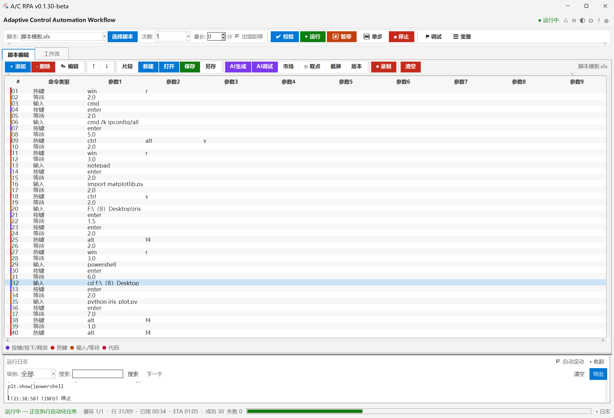

本稿以 v0.1.30-beta 的实际界面（视觉模型逐图读取 + 源码事实核对）为基线，给出可照图施工的深色视觉稿。 骨架不重排，只重配视觉权重：一屏一个实心主操作、颜色从文字移到色条、关键操作永不滚出视口。

英文标语删除，标题承担「文档名 + 未保存点」；5 个图标与窗口控制同侧，形成一条权利带。
左段固定不可滚动，右段参数区才滚动。窗口 640px 时「运行/停止」仍在视口内。
删除/清空/录制收进「⋯」；实心仅「保存」；AI 改紫描边；危险操作走 ghost + 危险色文字。
分类色移到行首 3px 色条，命令名回归前景色；空参数列折叠为 +2 chip。
级别徽标定宽 42px、时间戳降权，长日志可纵向扫读；控件统一 24px 基线。
状态｜进度（6px 圆角槽）｜指标，右端保留日志展开入口。
只有"本屏最重要的一步"能实心。脚本编辑区那一步是「保存」，运行在执行栏。
现状：设备互联 5 张空表各只有一行 9pt 灰字（netlink/window.py:608/724/750）。
| Token | 值 | 对比度 | 用途 |
|---|---|---|---|
| fg | #F2F2F2 | 16.16:1 | 标题 / 选中行 |
| fg2 | #C9C9C9 | 10.93:1 | 正文 / 单元格 |
| fg3 | #9A9A9A | 6.43:1 | 标签 / 时间戳 |
| fg4 | #6E6E6E | 3.55:1 | 仅禁用态，不作正文 |
| accent | #4CC2FF | 9.02:1 | 主操作描边 / 链接 |
| accent-fill | #0878B8 | 白字 4.78:1 | 实心主按钮底 |
| success | #6CCB5F | 8.91:1 | 保存 / 成功 / 通过 |
| danger | #FF9AA2 | 8.96:1 | 删除 / 停止 文字 |
| danger-fill | #C42B1C | 白字 5.66:1 | 破坏性确认按钮 |
| warn | #E3B341 | 9.30:1 | 替换霓虹黄 #FCE100 |
| ai | #A78BFA | 6.65:1 | AI 紫（描边式） |
| info | #6CB6FF | 8.42:1 | 日志 INFO |
| 级 | 值 | 级差 | 用途 |
|---|---|---|---|
| bg | #161616 | — | 窗口底 |
| surface | #1C1C1C | 1.06 | 工具栏 / 执行栏 |
| surface-alt | #232323 | 1.08 | 卡片 / 表头 |
| raised | #2B2B2B | 1.11 | 弹层 / 下拉 |
| overlay | #333333 | 1.12 | Toast / 悬浮 |
| border | #343434 | 1.37 | 1px 发丝描边（on surface） |
相邻表面级差 1.06–1.12：连续可读但不成"花板"。层级由「1 级色差 + 1px 描边」共同表达， 不引入圆角与阴影 —— tkinter 的 Canvas 重绘成本会在低端机掉帧。
沿用分类色，落在左侧 3px 竖条；节点底统一 surface-alt，深红块退场。
头行「序号 + 命令名」，副行「参数摘要」等宽 12px，高度 44→52。
运行中外发光 2px accent；失败 danger 描边 + 右上「!」角标；端口 hover 放大 1.4×。
| # | 验收项 | 判据 | 量级 |
|---|---|---|---|
| P0-1 | 实心按钮收敛 | 工具栏实心按钮 9 → ≤2（仅「保存」） | 视觉权重 |
| P0-2 | 运行组钉死 | 窗口 640px 宽时「运行/停止」矩形完全在视口内 | 可用性 |
| P0-3 | 应用栏 34→26px | 主区高度 +8px；标题回退「未命名脚本」 | 空间 |
| P0-4 | 色值校正 | warn 9.30:1（不刺眼）；白字 on accent-fill(#0878B8) 4.78:1 ≥ 4.5:1 | 对比度 |
| P0-5 | 日志工具条基线 | 工具条内全部控件 winfo_height 相等 | 对齐 |
| P0-6 | 空态覆盖 | 5 处空表均含「图标 + 主句 + 主按钮」 | 可行动率 |
| P0-7 | sash 一致 | main_paned 改 flat + 非 opaqueresize，拖拽无白线 | 一致性 |
| # | 验收项 | 判据 | 量级 |
|---|---|---|---|
| P1-1 | 分类色移到色条 | 表格截图：彩色文字 0 处，3px 色条 100% 行覆盖 | 辨识度 |
| P1-2 | 参数空列折叠 | 10 行脚本右侧空白率 ~40% → <10% | 密度 |
| P1-3 | 互联概览+单表多视图 | 首屏信息行 ≥3（在线数 / 配对码 / 权限档） | 可行动率 |
| P1-4 | 色值白名单 CI | grep hex（排除 theme.py）结果 ≤10 | 可维护性 |
| P1-5 | 图标统一 Fluent 16px | 标题栏图标 winfo_height 全部 16±1 | 一致性 |
| P1-6 | 日志级别徽标定宽 | 100 行日志 [INFO] 起点 x 方差 = 0 | 扫读 |
图例条折叠进「⋯」、进度条 6px 圆角、文档名 hover 编辑提示、设置窗左导航分组 —— 均为零功能改动，可随版本顺带。
| 问题 | 修法 |
|---|---|
| 每张卡右上角都写「自动保存 ▾」（截图可见 6+ 处） | 只在页头写一次「所有更改自动保存」，卡内删除 |
| 「登录」绿色实心 + 「注销」红色实心成对出现 | 登录 = secondary；注销 = danger-ghost（会话内破坏性低） |
| 左导航图标 + 文字 16 项一列 | 分组标题（基础｜能力｜扩展｜系统）+ 折叠；图标统一 16px |
| 表单标签宽 110 固定，长标签折行 | form_label_w 保持，标签改右对齐（冒号列对齐） |
| 权限下拉弹出后遮挡 | 下拉最大高 240，向上弹出探测（复用 restyle_combobox_popdown） |
| 需求 | 文件 | 锚点 |
|---|---|---|
| 色板 / 令牌 | src/ui/theme.py | colors() 62-117；apply_theme() 382-566 |
| 标题栏高度 / 文案 | src/ACRPA.py | 1318 TITLE_DEFAULT_TEXT；6399-6462 |
| 主区 sash | src/ACRPA.py | 6457-6462 |
| 工具栏按钮族 | src/ACRPA.py | 4755 _tbtn；4807 _init_toolbar_buttons |
| 执行栏拆分 | src/ui/exec_bar.py | 214 build；262-286（canvas/scrollbar） |
| 参数列折叠 | src/ui/editor_columns.py | 94 param_col_width；116 sync_param_headings |
| 表格行高 / 色条 | src/ui/editor_view.py | 134-247（tree 构建）+ 新增 stripe 列 |
| 日志工具条 | src/ui/log_dock.py | 86-94（句柄）；196 build |
| 互联空态 | src/ui/netlink/window.py | 608 / 724 / 750 |
| 工作流节点 | src/ui/workflow_view.py | _FLOW_STYLE / _FLOW_COLORS（34 处 hex） |
| 空态组件（新） | src/ui/widgets/ | 新建 empty_state.py |